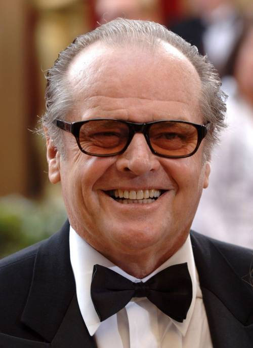
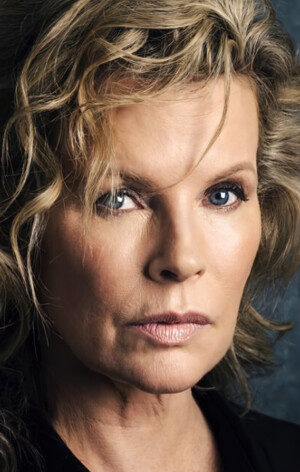
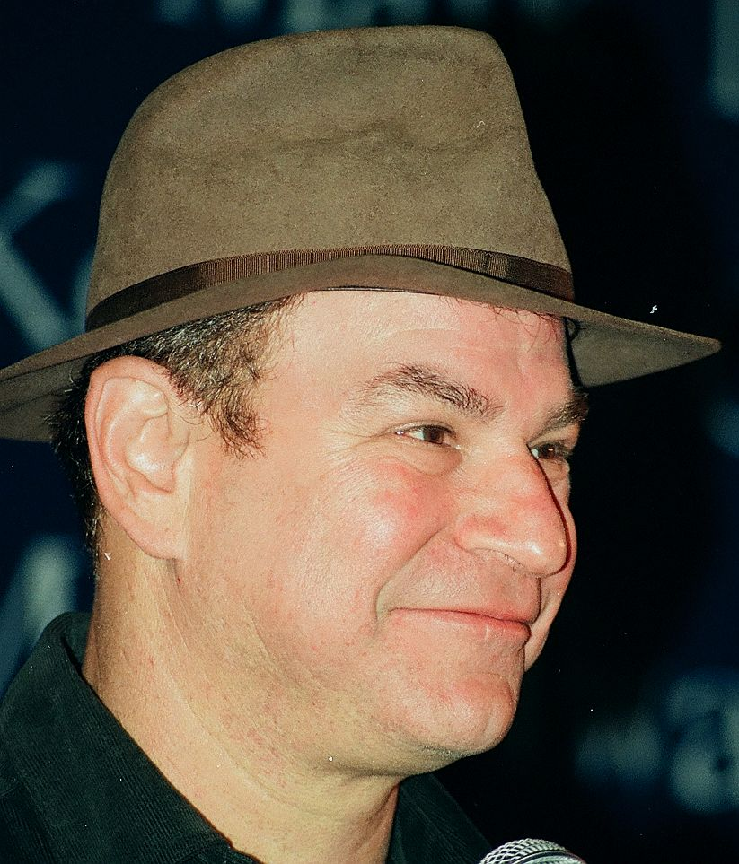
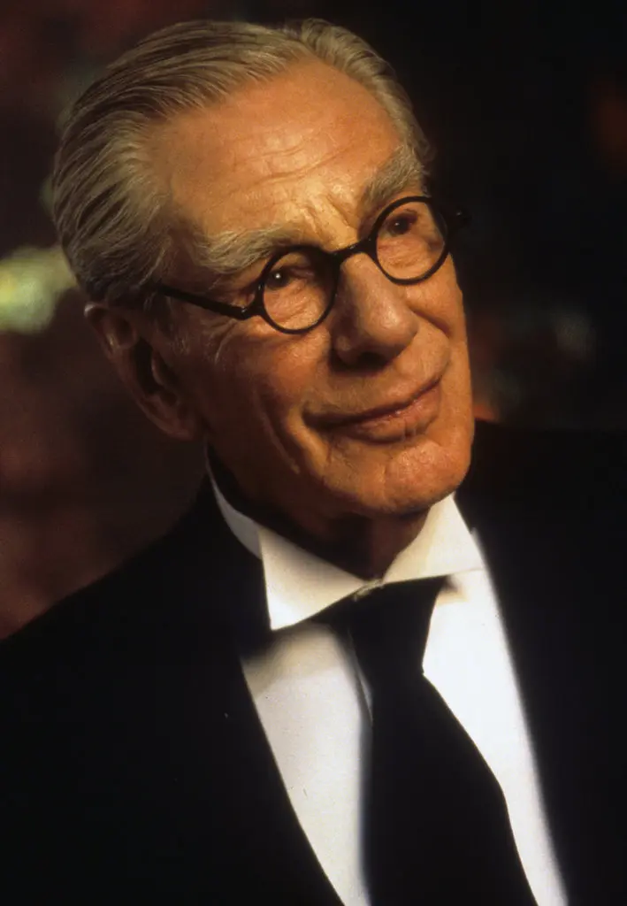
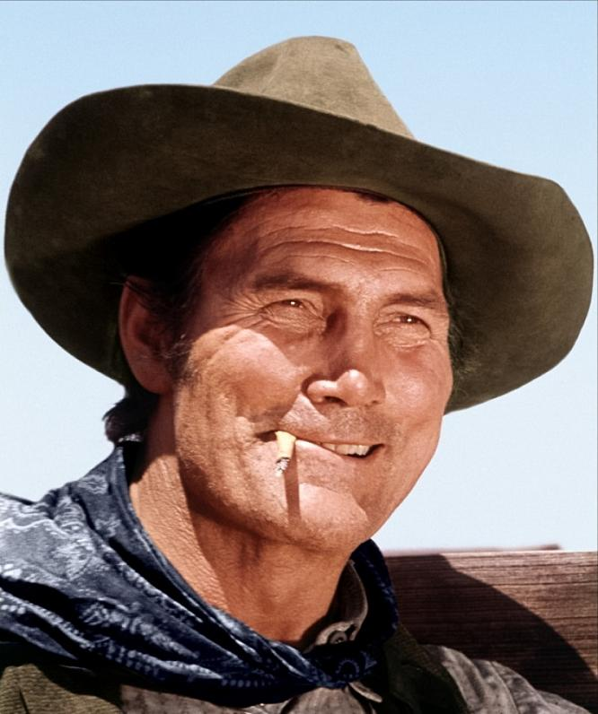

Майкл Кітон – Бетмен / Брюс Вейн
Брюс Вейн — мільярдер, філантроп і власник корпорації Wayne Enterprises. Після вбивства своїх батьків у дитинстві,
він присвятив своє життя боротьбі зі злочинністю в Ґотемі. Вдень він бізнесмен, а вночі — загадковий месник у масці, відомий як Бетмен.
Джек Ніколсон – Джокер / Джек Нап'єр
Джек Нап'єр — небезпечний гангстер, який після нещасного випадку у хімічній фабриці перетворюється на Джокера — психопатичного злочинця
з постійною усмішкою на обличчі. Він стає головним антагоністом фільму та особистим ворогом Бетмена.
Кім Бейсінгер – Вікі Вейл
Вікі Вейл — журналістка та фотографиня, яка розслідує появу загадкового Бетмена в Ґотемі.
Вона також стає романтичним інтересом Брюса Вейна. Її цікавість і рішучість роблять її важливою фігурою в розвитку сюжету.
Роберт Вул – Олександр Нокс (Alexander Knox)
Нокс — журналіст, який працює разом із Вікі Вейл. Він намагається дізнатися правду про Бетмена та
підтримує Вікі у її розслідуванні. Його персонаж також вносить елементи гумору у фільм.
Майкл Гоф – Альфред Пенніуорт
Альфред — вірний дворецький родини Вейн і єдина людина, яка знає про подвійну особистість Брюса.
Він допомагає Бетмену в його боротьбі проти злочинності, а також підтримує Брюса як батьківська фігура.
Джек Пеланс – Карл Гріссом (Carl Grissom)
Гріссом — бос ґотемської мафії та колишній роботодавець Джека Нап’єра.
Його зрада стає вирішальним моментом, що призводить до трансформації Джека в Джокера.